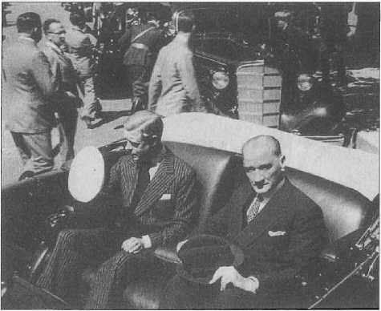

8
BÜYÜK ADAM: ATATÜRK
Atatürk’ün Kişisel Özellikleri
TÜRKÇEDE son zamanlarda yaygın ve bazen yanlış olarak “karizmatik" kavramı kullanılmaktadır. Weberyen bir tabir olan, kilise literatüründen alınma ve Yunanca bir kelime olan karizma yanılmaz, güvenilir ile eş anlamda kullanılan bir kavramdır. Osmanlıcadaki karşılığı ise “sahibkırandır." Karizma kelimesi tam olarak Gazi Mustafa Kemal Atatürk gibi liderleri ifade ediyor. Yanılmasına ihtimal verilmeyen, güvenilen bir lider... Kaldı ki Atatürk liderlik vasfıyla doğmuş, herkesin görmeyeceği şeyleri görebilen, ileri görüşlü ve bu sebeplerle de karizmatik diye tavsif edilebilecek bir şahsiyettir. Karizmatikliğine şu iki örnek verilebilir: İstiklâl Savaşı kumandanları, bilhassa kurucu ilk üç büyük kumandan (Mustafa Kemal Paşa, Ali Fuat Paşa ve Kâzım Karabekir), fevkalade kıymetli insanlar olmakla beraber içlerinde en olmayacak gibi görünen hedefleri işaretleyen Atatürk’tür. Diğer ikisi ise daha temkinli hareket etmişlerdir. Başka türlüsü de mümkün değildi, zira bu memleketi yönetenler Birinci Dünya Savaşı sırasında büyük atılımlardan, ideallerden bahsetmiş, sonrasında ise olmayacak hatalar yapmışlardı ve bu hatalar her şeyden önce imparatorluğun cenaze namazının kılınmasına ve büyük insan kaybına sebep olmuştu. Mekteplerde okuyan gençler yedek subay olarak askere gitmişler ve geri dönmemişlerdi. Tarlalar kıymetli çiftçiden, kasabalar zanaatkâr esnaftan mahrum kalmıştı. Bu durum, kumandanlar da dahil olmak üzere, sivil ve askerî erkânın temkinli olmasına yol açmıştır. Birçoğunda en ziyade “Evet, kurtaralım ama nasıl kurtaralım? Ne kadar kurtarabiliriz?” düşüncesi ve endişesi hakimdi.
Gazi ise fevkalâde atılımcı bir ruha ve bir dehaya sahipti. Doğru hesap yapmak ve kitleleri bu yönde etkilemek kolay değildir. Herkes vatanı seviyor ve kurtarmaya çalışıyordu ama her kafadan ayrı ses çıkıyordu. Bu değişik gruplar nasıl ikna edilip bir araya getirilecekti?
Atatürk’ün başarısındaki en önemli faktör fevkalade vazgeçmez bir iradesinin olmasıdır. Adeta Rumeli inadı vardır. “Olmalı" dediği an, “olabilir" yoktur. “Olmalı" dediği an, oluyor, onu olduruyor. Bu herkes için lazım bir şeydir. Sanatçı için de bilim adamı için de lazımdır. Gerçekten yaratacak, atılımı yapacak iş adamı için de lazımdır. Bir kumandan için, bir siyasetçi için ön planda lazımdır.
Atatürk milliyetçidir. Bir Türk milliyetçisidir ama bunun yanında evrensel bir adamdır. Barışçıdır, dövüşmesini bildiği gibi barışmasını da bilir. “Mecbur kalmadıkça savaş bir cinayettir" demiştir. İzmir’in kurtuluşu sonrasında hükûmet konağına girerken merdivenlere serilen ve “Onlar işgal ettiklerinde Türk bayrağını yere sermişlerdi” denilerek çiğnemesi istenen Yunan bayrağını kaldırtıp, “Bayrak bir milletin namusudur, ayaklar altına alınamaz” diyecek kadar gerçek şövalyedir. Bir entelektüel olduğu hakikattir.
Araştırmayı sever, iyi giyinir, buna özen gösterir, fotoğraf çektirmeyi sever ve bilir. Bütün fotoğraflarında duruşu bir eğitimle mümkündür. Boyu 1.68 cm civarında tıpkı kozmonot Yuri Gagarin (o da 1.58 cm) gibi fotoğraflarda uzun görünüyor. Vücut ölçü ve nisbeti yerinde ve kitleyle iletişimde bunu kullanıyor.11211
Akıl ve bilimden yanadır. Fransa’nın etkisi bu kuşakta etraflıca görülür. Tabii ki bir devrimcidir, reformisttir. Çünkü ülkesinin reforma ihtiyacı vardır.
Aşçı, yaver, şoför, garson gibi yakınındaki kişilerin ifadelerinden şunları görüyoruz. Gazi gayet mütevazı, görgülü ve nazik bir insandır. Müsrif ve aşırı tüketici olmadığı, hesaplı davrandığı açık. Balkanlar’da ve Şark’ta bu gibi önderler iktidara mütevazı adamlar olarak gelirler. Ancak arkalarında birçok çocuk ve akrabalardan oluşan zengin bir zümre bırakırlar. Atatürk iktidara geldiği gibi dünyayı terk etti. Emlaki ve parasını kamuya bıraktı, yakınındaki manevi kızlarına maaşlar bağladı. Çankaya’da hayatın mütevazı bir reisicumhurunki gibi olduğu anlaşılıyor.
Çok iyi bir hatip olduğu da bir gerçektir. Alkolle olan ilişkisi uç derecede değildir. Sarhoş olup, kendinden geçtiği vaki değildir. Tam bir sigara tiryakisi ve kahve müptelasıdır. Balkanlılar gibi o da kahveyi çok severdi. İştahlı birisi değildi, yemek yemeyi çok sevmiyordu. En çok kuru fasulye ve ayranı severmiş. Batılı yemeklerden hazzetmez, hep Türk yemeklerini tercih edermiş. Mesela peynirli omleti de çok severmiş. Az yiyen, az uyuyan bir kişiydi. Hiç küfür etmezmiş. Birine kızdığında söylediği laf “inatçı katır" olurmuş.
Tabii ki yerine göre sert hiciv yapabiliyordu ki iğneleme ile ilgili sayısız hikâyesi vardır. Türkçeyi düzgün kullanıyor, yüzüyor, ata biniyordu ama bütün gün aşırı spor faaliyeti yapmıyordu.
Vücut duruşu ile fotoğrafı ayarlıyordu. Kadınlara iltifat ederken hiç zahmetine acımıyordu. Hatta hak etmeyen kadınlara bile iltifat ediyordu ve bundan da hoşlanıyordu. İltifat dağıtan, cömert birisiydi, çünkü iltifat da bir atıfettir. Mesela iyi dans ediyor, buna folklor da dahil. Resimlerden de görülebileceği gibi Balkanlar’dan gelen heyetlerle horon tepiyordu. Bu herkesi cezbediyordu.
Askerler sivil kıyafete o kadar kolay intibak edemezler ama kıyafetleri çok iyidi. Bir de Atatürk sülaleden aristokrat, bir sürü kıyafet içinde yaşayan biri değildi. Bütün o zabitlerimiz gibi sıkıntılı bir hayattan sıkıntılı bir işe geçen biriydi. Buna rağmen giyinmeyi çok iyi biliyordu.
İran Şahı ile görüşmesinde Şah böyle daha babavari görünen bir adam ve Atatürk de onun hemen karşısında efendi adam pozundadır. Şah’a katiyyen bir küçümsemesi, en hafif bir iması yoktur. Hâlbuki adam okumamıştır ve çavuşluktan çıkmadır. Atatürk ise birinci sınıf bir kurmaydı, hangi orduya koysan general olurdu.
Mesela ulema takımı ile ilişkilerinde öyle, fazla ukalalık yapanlardan değildi. Ben o dönemi yaşayan insanları tanıdım. Abdülkadir İnan anlatırdı. Böyle bir tahakkümünü, büyüklüğünü görmemiş. Dil komisyonlarında onun bir paylaması vardır. Reşit Rahmeti Bey görmemiş ama bir kere Sadri Maksudi’nin canını yakmış. Demek bazen tenkidde sert olabiliyordu.
Kendisi ibadetine bağlı biri değildi, ancak ibadet edenlere hürmeti vardı. Fevzi Çakmak Paşa da dâhil çevresinde namaz kılan pek çok insan vardı. Onlara genelde “Namazınızı da kılın, resim de yapın” dermiş. Dünya hayatından vazgeçmemeyi öğütlermiş. Kız kardeşinin anlattığına göre, Ramazan ayı ya da kandil geceleri gibi özel zamanlarda çok ihtimamlı olurmuş. Bazen kendisi de oruçlu olduğu halde kız kardeşine iftara gidermiş. Annesi için Kur’an okuturmuş.
Gazi Mustafa Kemal Paşa ve İran Şahı Rıza Pehlevi ile Ankara’da törenlere giderken, 17 Haziran 1934.
Yine Ramazan ayı geldiğinde ince saz ekibini köşke sokmaz, meşhur sofrasında içkiye yer vermezmiş. Misafirleri arasında oruç tutan, namaz kılan olursa her türlü kolaylığı sağlatırmış. Çanakkale şehitlerinin ruhuna mutlaka her yıl dönümünde Kur’an okuturmuş. Kendisi de Kur’an okur, iyi okunmasını istermiş.
Eğitime çok önem veren cehalete düşman birisiydi. Millî Mücadele’nin en kırılgan dönemlerinde bile eğitim kongresi toplayacak ve bunu iptal etmeyecek kadar eğitimi önemsiyordu. Zirai ürünlerin ihracıyla geçinen bir ülkenin kıt imkânlarına rağmen yurt dışına talebe göndertmiştir. Sadece teknik dallar değil arkeoloji, filoloji ve hatta Bizans tetkikleri için de öğrenciler gönderildi. Arkeoloji için gidenlerden Ekrem Akurgal ve Hititoloji’nin babalarından sayılan Sedat Alp önemli bilginler oldular. Bizantinistik için gönderilen dört gencin bu dalda kalmadığı, dolayısıyla bu dalı geliştiremediği açık.
Gazi Mustafa Kemal Paşa, Ankara’ya gelen Afganistan Kralı Amanullah Han ve Kraliçe Süreyya ile birlikte, Mayıs 1928.
Yabancı dile ayrı önem vermiştir. Çok iyi derecede Fransızca ve yeterli derecede Almanca biliyordu. Tabii bütün Makedonya gençleri gibi Rumca (Yunanca) ve Bulgarcaya aşina idi. Konuşuyor, mektuplar yazıyor, çeviriler yapabiliyordu.
Cephede bile kitap okuyacak kadar gerçek bir kitap tutkunudur. Binlerce kitap okumuştur.
Biraz da onun için büyük bir adamdır.'11221 Okuduklarının başında Reşat Nuri geliyor. Bütün kuşâğı gibi şiir de seviyordu, ama şiirle düşünmekten çok, nesri seviyordu. J. J.
Rousseau’nun İnsanlar Arasındaki Eşitsizliğin Kaynağı adlı eserini Fransızcadan derinlemesine okuduğu biliniyor.11231 Çankaya Köşkü kitaplığının taranmasıyla bilgiler artabilir.
Okuduğu kitaplara tuttuğu kenar notları ilginçtir.
İki Dünya Savaşı Arasında Avrupa ve Atatürk Türkiyesi Birinci ve İkinci Dünya Savaşları arasındaki Avrupa bir bakıma dünya demektir. Bu boş bir laf değildir. Çünkü dünya tarihine baktığımız zaman, belirli bir coğrafya içinde, Akdeniz uygarlığı bir gelişme ve yer değiştirme takip etmiştir.
Üç büyük din ve Akdeniz çevresinde yaşayan insanlar bu gelişimin içindedirler. Biliyoruz nasıl olduğunu, bütün uygarlık tarihini burada tekrarlamaya lüzum yok; eski Yunan, eski Şark’ın devamıdır. Eski Yunan’ın devamı İslam uygarlığıdır ve İslam uygarlığının devamı ise Rönesans İtalyası ve nihayet Avrupa medeniyetidir. Bu medeniyetin adını ekseriyetle yanlış kompartımana sokuşturarak, Hıristiyan uygarlığı koyarlar. Hatta Helen-Hıristiyan uygarlığı derler. Hâlbuki Helen-Hıristiyan uygarlığını Helen-İslam uygarlığı diye de değiştirebiliriz.-124 Zaten Hıristiyanlığın zuhurundan evvel Sedusi dediğimiz akım ve yaşam tarzıyla Filistin de Helen-Yahudi uygarlığı olarak bilinen bir oluşumun geliştiği malûmdur.
Birinci Dünya Savaşı’nın arifesinde, Avrupa aslında hızla şehirleşen bir kıtadır. Almanya, İngiltere, Fransa gibi ülkeler artık yarı yarıya yahut yarıdan fazla şehirli nüfusa sahiptir (Fransa Birinci Dünya Savaşı’na % 55 köylü nüfusla girdi). Bilhassa İngiltere endüstriyel ve öncü şehir ülkesi olarak çoktan köylü nüfusun çok azaldığı ve köylünün köylülüğünü kaybettiği, çiftçi haline dönüştüğü bir ülkedir. Almanya bunu izlemektedir. Fransa’daysa şehir nüfusu köy nüfusundan henüz azdır.
Gazi Mustafa Kemal Paşa, İran Şahı Rıza Pehlevi, İsmet (İnönü) Paşa, İzzettin (Çalışlar) Paşa ve Fahrettin (Altay) Paşa bir arada, 23 Haziran 1934.
Ancak Birinci Dünya Savaşı öncesi diğer taraflara baktığımızda farklı bir manzara ile karşılaşıyoruz. Söz gelimi, Balkanlar’a inersek Romanya’da nüfusun % 15’i, Bulgaristan’da % 12 si, Sırbistan’da % 13-14’ü, Rusya’nın % 12-13’ü İtalya’da bile yalnızca % 21 ’i şehirlidir. Avrupa Rusyası’nda, yani Polonya, Litvanya gibi tekstil sanayiinin yoğunlaştığı (ki Polonya’nın büyük kısmı o zaman Rusya’da idi) yerlerde bu oran % 22’ye kadar çıkar. Ama mesela Orta Rusya’da bu nüfus % 12 idi. Türkiye ise farklı bir durumda; Avrupa Türkiyesi’ndeki şehirli nüfus % 25 miktarındaydı. Oldukça şehirleşmiştir. Filhakika, bizde halk arasında Rumeli ve Anadolu çekişmesi hep vardır ve havadan sudan ileri gelen bir şey değildir; büyük ölçüde Rumeli ahalisinin erken şehirleşmekte olduğu bir çevreden çıkmasından ileri gelir. Rumeli Türklerinin ona göre bir yaşayışı ve dünyaya bakış sistemi vardır ve özellikle Balkan bozgunundan sonra, bu halkla Anadolu halkı yüz yüze gelmiştir. Avrupa Türkiye’sinde oran öyle iken, umumen Osmanlı İmparatorluğu’nun Asya bölgesinde de aşağı yukarı nüfusun sadece % 6-7 si şehirli sayılmaktadır. Buna Suriye’nin Haleb, Şam, Trablusşam ve Beyrut gibi merkezleri dışında yaygın bir kırsal ve göçebe nüfusun yaşadığı Maşrık Arabistanı’nı da katmak gerekir.

Mustafa Kemal Atatürk ile İngiltere Kralı VIII. Edward’ı
İngiliz Büyükelçiliğine götüren otomobil Galatasaray Lisesi önünden geçiyor, 4 Eylül 1936.
Oysa İngiliz işçi sınıfı Birinci Dünya Savaşı’na girerken artık bazı ülkelere göre daha rahat, daha yarınından emin, hiç değilse ücret bakımından, yaşama bakımından bir nebze düzelmiş olarak girmektedir. Zengin bir imparatorluğun artı değerlerinden mümkün olduğunca istifade eden bir grup olarak bulunuyordu. Ama yanı başında Almanya vardı. Orada gayet muhafazakâr, tutucu, militarist, otoriter bir devlet, cemiyet sistemini tesis eden Bismarckçı bir anlayış, hem tarım bölgelerini hem de işçi sınıfını koruyan oldukça önemli sosyal kanunlar getirmiştir. O kadar ki, 1914 evveli, bugünkü sosyal demokratların selefleri, Avusturya’da, Macaristan’da, Polonya’da vs. muhafazakâr hükümetlerden bazı sosyal reformlar talep ettikleri zaman, örnek olarak hep Alman işçi sınıfının durumunu ve kazançlarını göstermişlerdi.
Nitekim o dönem Avusturya’ya bakarsak,daha farklı bir yapı ile karşılaşırız. Sanayi ve madenlerde çalışan insanların büyük çoğunluğu tam bir sefalet içindedir. Gececiler diye bir tabir vardır ki aynı odayı değil, gece ve gündüz münavebe ile aynı yatağı paylaşan fakir işçiler grubudur. Evlerin yersizliğinden oda oda kiralanan büyük kışla konutlar (Mietskaserne )vardır; ahali hayatını sokakta ve ucuz meyhanelerde geçiriyordu. Keza Macaristan’a baktığımız zaman, işçi sınıfının durumu çok daha kötüydü. Büyüyen, hızla gelişen sanayinin bütün yükünü bu insanlar çekiyorlardı.
Öbür taraftan Romanya ve Bulgaristan’da gittikçe büyük çiftlikler meydana gelmekte ve köylüler topraksızlaşıp, ücretli tarım işçileri haline gelmekteydiler. Aslında bunlar Osmanlı Türkiyesi’nin dışındaki gelişmelerdi.
Burada Avusturya-Macaristan
İmparatorluğu’na bir göz atmakta fayda var. Savaş öncesinden çok ilk yıllarına gitmek lazım. 1500’lerin başında Avusturya hükümdarı Habsburgların büyük dükasıdır, bir müddet sonra
Alman imparatorudur ama esas gücü Habsburg büyük dukası olmasıdır. Bizde, “biz Almanlarla tarih boyunca dost geçiniriz" lafı boştur, dost değiliz aslında, kavga ettiğimiz Alman İmparatorluğudur. Tarihte, Habsburg Büyük Dükası ile Macar Kralı değiş tokuş yaptılar. Bacılarını mübadele ile tecviz ettiler (evlendirdiler). İki kız kardeşi aldılar ve bir patent (berat) imzaladılar; kim daha önce ölürse taht öbürüne geçiyordu. Ferdinand von Habsburg ölürse, topraklar Macar Krallığına geçecekti. Çünkü çocuklar, yeğenler, kuzenler artık aynı kanı taşıyorlar, ama Lajoş giderse, topraklar öbür tarafa geçecekti. Nitekim Mohaç Meydan Muharebesi’nde Lajoş öldü. O zaman ne oluyor? Bütün Macar topraklarının Avusturya’ya bağlanması lazım. Ama nereye bağlanacak? Türkler gelip oturmuşlar. Bu kavga nereye kadar devam etti? 1683-89 harblerine kadar... Ondan sonra Macaristan bir taç olarak Avusturyalılara tabi oldu.
Avusturya ve Macaristan’ın yanında eski bir krallık olan, tacı Macarlara bağlı daha sonra Yugoslavya’nın bir kısmı haline gelmiş Hırvatistan vardır. Slovenya’nın tacı ise Avusturyalılara bağlıydı. Bugünkü Çekya ve Slovakya olan Bohemya ve Moravya ülkesi vardı. Bunun Slovakya kısmı mülk olarak Macarlara bağlıydı. Bohemya bölgesiyse Avusturyalılara bağlıydı. Erdel kısmı, Transilvanya dediğimiz -ki bugün Romanya’dadır ve eski Macar toprağıdır- harbden önce Macar tacına bağlıydı.
1878 Berlin Kongresi’nden sonra, Avusturya- Macaristan imparatorluğu bizden Bosna-Hersek’i aldı. Fakat ne oraya bağlanabildi ne de ötekine. Ortak idare derler, ki o yüzden Avusturyalı memurlarla Macar memurlar hep itiş kakış halindeydiler. Hatta resmî heyet ziyaretlerinde bile, birinin attığı nutka öbürü “sus, otur" gibi şeyler derdi. Ahalîyi yönetme biçimleri farklıydı. Macarlar Müslümanlara meylediyorlardı, öbürleri ise Hıristiyanlara. Dışişleri Bakanı Kont Aehrental’in burayı k.u.k. (imparatorluk ve krallık) müşterek eyaleti olarak ilhakı o zaman da
Viyana ve Budapeşte’de dahi hata olarak nitelendirilmişti. Veliaht Prens Ferdinand’ın, 1914’teki Saraybosna ziyareti bu açıdan çok yanlıştı. Gergin bir ortam vardı ve başına gelecekler açıktı.
20. asrın başlarında, Avrupa’da, Rusya ve Osmanlı İmparatorluklarının yanında, muhtelif milletlerden oluşan bir imparatorluk daha vardı. Bu, Avusturya-Macaristan dediğimiz konfederatif monarşi idi. “Tuna Monarşisi" diye de adlandırılır.
Atatürk ve İsmet İnönü bir konuyu müzakere ederlerken... En sağda ise CHP İstanbul İl Başkanı Cevdet Kerim İncedayı görülüyor, 1936.
Avrupa’nın dışında tabii, dünyada Japonya ve ABD büyük gelişmeler göstermekteydi. Japonya’ya değinecek değilim ama ABD, Avrupa’nın uzantısı olan bir ülkedir. Daimî surette, proletaryası ile olsun, maceraperestliği ile olsun, entelektüelliği ile olsun, Avrupa’nın en atılgan, en girgin ve alt sınıf unsurlarını çekmekteydi. Bu göç kalıpları bugün de böyledir. Köyüne bağlı, sakin, uyuşuk köylü köyünden çıkamaz, köyünü terk edip, şehre ilk giden; en açıkgöz, birtakım değerlerini fazlaca kaybetmiş, yırtıcı adam tipidir. Avrupa’dan kalkıp Amerika’ya göç eden ayak takımı da olsa, köylü de olsa, işçi de olsa, serseri de olsa bu vasıflara sahip bir birey demektir. ABD böylelikle hakikaten yırtıcı, girgin, özlem ve hayalleri olan, rekabete açık insanlardan oluşan bir kıtaydı. İkinci Dünya Savaşı’ndan sonra göçmenler büyük ölçüde başta Avrupa, Akdeniz ve Asya’nın beyin takımı oldu. ABD sıçraması artık önlenemezdi.
Ayrıca dünya haritasına baktığımız zaman, doğal coğrafya açısından yeryüzünün hakikaten cennetidir. Tanrı orayı, âdeta Kenan ülkesi gibi, balla sütün bir arada aktığı bir ülke olarak yaratmıştır. Maden kaynakları son derece zengindir ve her çeşidi vardır. Ayrıca bu madenleri çıkarmak hiçbir şekilde zor ve masraflı değildir, yüzeye paraleldir. Toprak verimi gayet yüksektir. Mesela, bir Illinois eyaletinin kaldırdığı tarım hasılası Avrupa’nın üç büyük ülkesinin bir yıllık hasılasına eşittir. Kaldı ki Illinois ABD’nin tahıl ambarı da sayılmaz.
Gerek Birinci Dünya Savaşı öncesinde gerekse de iki savaş arasında, Avrupa’da memnuniyetsiz kitlelerin varlığı çok açıktır. Sosyo-ekonomik sebepler, tarihî gerekçeler, yıkılan imparatorlukların bakiyesi ve ideolojik etkenlerden dolayı Avrupa’da memnuniyetsizlik ve yayılmacılık düşüncesi çok açık bir şekilde ortaya çıkmıştır.
Birinci Dünya Savaşı’nın en önemli sıkıntılarından birisi “zaman” olmuştur. Yönetici ve komutanlar ülkelerindeki orduların teknolojisini, teknik kapasitesini anlamamış, savaşı hemen bitireceklerini düşünmüşlerdir. Çünkü savaş başlamadan önce zamanın bu kadar uzayacağını, karşıdaki düşmanın da aynı direnci göstereceğini ve bunun nelere mal olacağını ne genelkurmaylar ne de teknokratlar biliyordu. Harbin senelerce devam edeceğini düşünenlerin sayısı azdı. Üstelik bu harb sivil kesime sirayet eder, şehirleri yıkar, açlık başlar, insanlar ölür, kadınlar, çocuklar, masum halk gider, gibi hesapları yapan da yoktu. Çünkü Avrupa’nın o zamana kadar yaşadığı harblerde ordular, mareşalin kumandasında giderler, açık bir ova ve konuşlanma fırsatı bulunca birbirlerini yerler veya çok ağır yaralanırlardı. Kısacası sivillerin savaşın cephe gerisine nasıl sıçrayacağı hakkında fikirleri yoktu.
Bizim 2000 yıllık millî tarihimizin en büyük felaketi, aslında Balkan Savaşları’dır. Bu nedenle de biz bu sivil yıkımı tahmin edebiliyorduk ama savaşın bu kadar uzayacağını bilemezdik. Petersburg’daki yıkımdan hiç bahsetmiyoruz bile. Birinci Dünya Savaşı Avrupa’da çok şeyi değiştirmiş, sosyal patlamalar yaratmıştır.
Eskisi gibi bir rahatlık artık Avrupa düşüncesinde söz konusu değildir; “Bizim düzenimiz iyidir", sözünü kimse rahatça sarfedemiyordu. 1916 ve 1920’de, bunu ne Berlin’de ne Viyana’da ne Budapeşte’de hele Paris ve Londra’da hiç kimse söyleyemiyordu. Bunu söyleyene aptal diye bakılıyordu. Hiç kimse böyle tartışmalara girmiyordu. Bölüşüm meseleleri, sosyal bünyenin reformasyonu gibi konular canlıydı. Herkes aslında durumun çıkmazını görüyor ve yeni modeller öneriyordu.
Harbin sonunda, bu fikrî patlamalardan evvel siyasi patlamalar başlamıştır. Bu sadece yenen devletlerin, yani bizim İtilaf Devletleri dediğimiz grubun üyelerinin, Merkezî Kuvvetler denen Avusturya-Macaristan, Almanya, Bulgaristan, Osmanlı İmparatorluğu’nu ezmesi, topraklarını alması, birtakım yükümlülükler dayatması,birtakım tahditler koyması ile ilgili değildir. Savaşın sonuna baktığımız zaman, ilk planda askerlerin ayaklandığını görüyoruz.
Harb çıktıktan sonra artık imparatorluk, Avusturya-Macaristan veya Osmanlı
İmparatorluğu veya İngiltere’nin tarihî hafızasında olduğu gibi, çok da yıkılmaz, dokunulmaz, vazgeçilmez bir müessese değildir.
19. yüzyılın Avusturyası, İngiltere ve Almanyası ne ise bizim dünya görüşümüz de buydu. Bizim babalarımızı, dedelerimizi saltanata itaatten başka tavırlı insanlar olarak düşünemezsiniz. Rusya’da dahi çürümüş çarlığa karşı çıkanlar ancak sosyal demokrat (komünist) aydınlar ve azınlık halklarının aydınlarıydı. Bunları da yerli mirzalar, mollalar şiddetle önlerdi.
Biz biliyoruz ki, harbden sonra dahi Mustafa Kemal Paşa’ya bu konuda en başta muhalefet edenler kendi arkadaşlarıydı; Rauf Bey, Refet Bey’di... Ya saltanat için ya da hilafet için muhalefet ediyorlardı. “Bağlılık yemini ettiğimiz, ekmeğini yediğimiz adam" diyorlardı. Bu toplumu saltanat ve hilafet müessesesi olmadan düşünemiyorlardı. Bu Avusturya’da, Rusya’da ve İngiltere’de de böyleydi.
Oysa Alman için böyle bir imparatorluk milliyetçiliği söz konusu değildi. Çünkü Alman imparatorluğu yeni ve biraz ananesiz bir kuruluştu.
İki savaş arasındaki Almanya’da asıl önemli olan ne öyle kapitalizmin büyümesi ne işçi sınıfını ezmesi yahut küçük burjuvaları örgütleyip Hitler’i iktidara getirmesi değildir. İki harb arası Alman tarihi dediğimiz zaman, çok önemli olmasına rağmen, dünyanın haritasını değiştiren, çağımızı değiştiren, değişmesine sebep olan bir olayın, Nazizm’in doğmasına rağmen, bir bakıma bugünün yaratısını, düşüncesini tayin eden iki harb arasındaki, Almanca kültürdür. Çünkü savaş sonrasındaki dünyanın sağını da solunu da tayin eden bu dönemin Almanyası olmuştur.-^126
Birinci Büyük Savaş bittiği zaman, en büyük olay kuşkusuz, dünya tarihi açısından komünizmdir. Sırf Rusya’da değil, birçok ülkede proleter sosyalist hareketlerin büyüyüp güçlendiği görüldü ve hatta kısa bir zaman için Almanya’da bazı şehirler ve bölgelerde (Röterepublik), Macaristan’da olduğu gibi Sovyet Cumhuriyeti var oldu. Tüm bu hareketler esas itibariyle zayıf da olsa demokratik yahut tüm anlamıyla burjuva yapısını kaybetmeyen ülkelerde de çok etkili olmuştur ve tepkilerini yaratmıştır. Bunlardan en önemlisi İspanya’dır, İspanya İç Savaşı’dır.
Bütün bu dağılımın dışında, tabii Sovyetler’de Lenin Hükûmeti’nin asıl yaptığı bir taktik bir yenilik vardır: Derhal savaşı sona erdirmek. Zaten sloganları da “Ekmek, barış" idi. Bunun için derhal Almanya ile savaşı durdurdu. 25 Aralık 1917’de bizden Talat Paşa başkanlığında bir delegasyon, Avusturya-Macaristan ve Almanya heyetleri, karşımızda Troçki’nin başkanlığında yeni Rusya delegasyonuyla, Brest-Litovsk Antlaşması’nı yaptı. Sovyetler karşımızda derhal Kafkasya’yı bıraktı. Enver Paşa’nın müthiş stratejik ve taktik hataları, Sarıkamış’ta en esaslı kolordumuzu mahvetmişti ve Rusya bu bölgeye bu sayede yerleşmişti.
Buna rağmen biz o antlaşma ile o cepheyi kazanmış olduk ve bir ara, ordularımız İran üzerinden Azerbaycan’a kadar neredeyse bütün Cenubî Kafkas’a nüfuz edebildi. En azından 1878 Berlin Kongresi’nde kaybettiğimiz sancakları, Ardahan, Kars ve Beyazıt’ı da geri aldık.
Şunun da üzerinde durmak gerekir ki, artık 1929’da SSCB’de Stalin’in tam hâkimiyeti vardı. Merkeziyetçi bir planlama ile bütün ekonominin ve bütün hayatın belirli direktiflere göre yönlendirilmesi söz konusuydu.
Demokrasi dediğimiz zaman, kelime zaten Yunancadır, Yunan demokrasisi, Batı medeniyetinin kökenidir gibi bir motto kabul edilmiştir. Ama gerçeklere baktığımız zaman görürüz ki, Batı’daki mevcut demokrasinin, eski Yunan site demokrasisi ile de çok büyük farkları vardır. Ve demokratik rejimin, Batı demokrasisinin ana vatanı olan İngiltere’nin de aslında Yunan demokrasisi ile ilişkileri sistem olarak o nispette azdır. Batı demokrasileri vatandaşlığı bütün kitleye vermek gibi zor bir örgütlenmeyi gerçekleştirmeye çalıştı. Henüz bu demokrasinin teorik temelleri dahi yerli yerine oturmamıştır.
Demek ki, burada demokrasi yavaş yavaş bütün kitleyi kapsayacak, birtakım menfaatlerin uzlaştırıldığı bir kurum olarak geliştirilmiştir. Çağdaş demokrasinin ana vatanı olan Batı Avrupa’da da ilginç bir şekilde, iki harb arasında, dünyanın hiçbir yerinde, ne Çin’de ne Hind’de ne Orta Şark’ta görülmeyecek bir despotizm (biz artık bunun için despotizm adını da, otoriter rejim adını da kullanmıyoruz), totaliter modeller ortaya çıkmıştır.
Denizcilik Bayramı (Kabotaj Bayramı) nedeniyle düzenlenen deniz yarışlarını Moda Yat Kulübü’nün kotrasından Afet İnan, İktisat Vekili Celâl Bayar,Kılıç Ali, Cevat Abbas Gürer ile birlikte izliyor, 1 Temmuz 1935.
İki harb arasında demokrasilerin iflas ettiği teorik olarak da ileri götürülmüştür, bu nedenle artık beşeriyet demokrasilerle değil, tanrısal liderlerle ve kuvvetli partilerle, bütün halkın birliği ile, sınıfların yok olması ile, yani sınıfsız bir toplumla idame edebilir fikri çok hâkim olmuştur. Fert, millet ve devlet için vardır. Bu entegrist milliyetçiliktir.
İki harb arasında kıta Avrupası, 200 yıldır monarşilerin otoritesini yıkarak verdiği mücadeleyi, tarihî oluşumunu, aslında çok da eski olmayan geleneğini reddetmektedir. Maalesef diktatörlükler dönemi başlamıştır. Böyle bir yapı içerisinde Türkiye’nin, yani o zamanki Kemalist Cumhuriyet’in tek partili rejimi yaşamasına rağmen, bu totaliter yapıya zihnen ve kurumsal olarak girmediğini belirtmek gerekir. Mesela cemiyet içinde farklı fikirler konuşulabiliyor, ayrıca CHP milletvekilleri öğleden sonraki meclis oturumundan evvel, sabah aynı salonda grup toplantılarında farklı fikirler etrafında münakaşa edebiliyordu. Polis rejimi hâkimdi, lâkin din konusunda Kemalizm hassas noktaları aşmayacak kadar temkinliydi.
Elimizde o dönemde bilhassa Doğu Anadolu’da açılan gizli medreseler hakkında esaslı bir rapor veya araştırma yok, fakat katledilen
Turan Dursun’un Kulleteyn11271 adlı hatıratında bile gördüğümüz kadarıyla bu tip medreseler yaşıyordu. Ayrıca cumhuriyet devriminde de çok yüksek mevkilerde buraların mezunlarını görebildik. Herhalde Kur’an kursları bir şekilde gizli veya açık devam ediyordu. Asıl tarikatların adabı ve ritüeli babadan oğula, amcadan yeğene geçmiştir. Şüphesiz ki İslam Sovyetler Birliği’nde de kilise tipinde bir örgütlenmeye ve ruhban sınıfına ihtiyaç duymadan yaşamıştır. Türkiye’de bunların yaşaması çok daha olasıdır. Hemen 1950’den sonra artan reaksiyoner, funda- mentalist hareketler bunu ispatlıyor. Celal Bayar ve Adnan Menderes bu yüzden bir kanun11281 çıkarmak zorunda kaldılar; bu, Atatürk’ü ve ilkelerini korumak noktasında 1950 rejiminin attığı önemli bir adımdır ve paralardan, pullardan İsmet İnönü’nün portrelerinin kaldırılmasıyla birlikte düşünülmelidir. Bu reaksiyonu her devrimden sonraki gel git hareketlerine benzeyen bir dalga olarak ele alan Taner Timur’u da burada zikretmeliyim .-H291
Her şeye rağmen şunu söylemek gerekir ki, Orta Avrupa’da, Almanya’da, İtalya’da başlayan, İspanya’da kanlı bir şekilde zafere ulaşan totaliter, faşist yapı, Balkanlar’a sıçramıştır. Balkan ülkeleri de bir bakıma Almanları beklemiştir. Yunanistan, Arnavutluk, Romanya ve Bulgaristan bu sistemi kabul etmiştir.
İki harb arası dönem dediğimiz zaman, bundan Avrupa’nın artık eski rolünü kaybetmesi, nöbetini başka unsurlara devretmesi, kendinin de kabuk değiştirmesi anlaşılıyor. Bu bir çöküntü, bir kaybolma mıdır? Hayır... Avrupa her şeye rağmen dünyaya damgasını vurmuştur ve bundan sonraki çağlara da vuracaktır. Amerika ekonomik üstünlüğü alabilir ama sonuçta kökeni Avrupa’dır ve rolü ancak Avrupalılaştığı ölçüde kuvvetlenmektedir. Bunun dışında Avrupa önemli bir kabuk değişikliği geçirmektedir. Müesseselerinde ve yorumlarında bu değişiklik göze çarpmaktadır. Ve o yüzden Avrupa yine öncü bir rol oynamaktadır. Bugün gördüğümüz gibi insan hakları konusunda Avrupa gerçekten samimi bir kıtadır. Bunu artık politikanın ötesinde bir mesele olarak benimsemektedir, çünkü bu konuda büyük badirelerden geçmiştir. Bazı müesseselerin insana tarihin ve Tanrı’nın lütfü olarak değil de doğrudan doğruya toplum bilinciyle ve toplumun yaşadığı hayatla geldiğini görmüştür. Birtakım müesseselerinin bedelini iki asırdır bu kıta çok büyük bedelle ödemektedir. Ama öte yandan da bu yeni görüş ve propagandayı diğer ülkelere nüfuz etmek için de kullanmaktadır.
Bu kıta iki harbin arasında önemli bir değişim geçiriyordu. Bu çok önemli bir şey, aslında değişim sırf harble değildir; harb değişimi hızlandırmıştır. Ama değiştirildiğinde de ebedî ve mutlaka kalıcı olacağına iman edilemezdi.